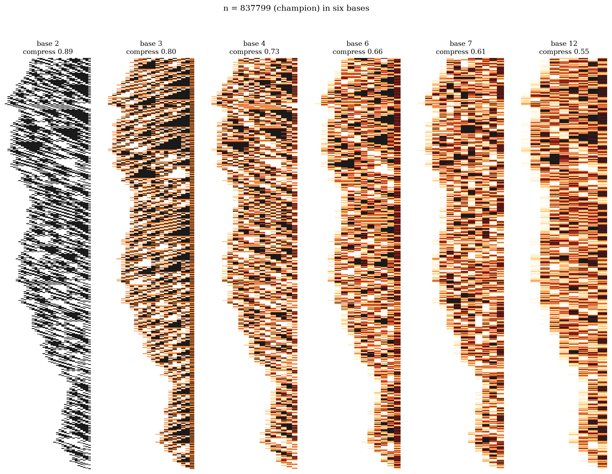

Final part. Series index in part 1. Repository: collatz_ai.
Most of what an enthusiastic newcomer discovers about Collatz — even working hard, even being right — turns out to exist already. We kept a strict ledger. Our binary↔ternary conversion insight, verified 20,000/20,000 before we knew: Stérin & Woods, 2020. The base-6 cellular automaton: Cloney–Goles–Vichniac 1987, Kari 2012. The fair-coin density theory: Terras 1976, Everett 1977. Our little digit-sum law: Midy, 1836. The 186-billion-step cycle bound: the Eliahou line. The verification architecture we re-derived from first principles: Barina's record software, whose sieves and jump tables our theory explains but did not beat. Every such case is attributed in the repo, usually within a day of our finding the prior art — often after we had found the result ourselves, which was chastening and educational in equal measure.
A personal note: my own instincts kept landing on things that professionals had judged publication-worthy — just years earlier. I choose to read that as calibration.

After targeted searching (July 2026), three items appear to be new. Stated with all due caution — none is peer-reviewed:
1. A computational record on the best known density method. The published record for the "how many numbers provably reach 1" exponent is x^0.84 (Krasikov–Lagarias 2003, computed at truncation depth k=11; no improvement found since). Running their own inequality system to depth k=20 — a nine-orders-larger computation with exact integer certification over 1.16 billion constraints — we obtain x^0.9146, with intermediate certified values 0.8624 / 0.8805 / 0.8953 / 0.9069 at k = 13/15/17/19. If this holds up to independent scrutiny it is, to our knowledge, the best density exponent ever computed for the 3x+1 problem.
2. A new analytical lens on that method. The Krasikov–Lagarias system turns out to be a topical map (monotone + homogeneous), which makes Hilbert-metric and tropical (max-plus) machinery available. That lens produced, among other things: a proof that the system's large-amplitude dynamics contracts at exactly ln 4 per sweep (a two-line "top-band dichotomy"), a combinatorial "peeling lemma" with exact 2/3-per-round structure, and a transport lemma identifying switching as the precise separation between the system's upper and lower dynamics. We found no prior work analyzing the Krasikov inequalities this way.
3. A new open question with a decision experiment. Krasikov and Lagarias explicitly hoped their exponents tend to 1. Our entropy accounting suggests an alternative: the method might saturate at the drift-balanced word entropy H(1/log₂3) = 0.94996... — the same "5% tax" constant that governs cycle-window counting and the dimension of potential divergence. Current data (through k=20) cannot distinguish the two; certifications around k = 25–30, a cloud-scale computation, would. Either answer would be interesting: saturation would locate a fundamental ceiling; passage would be strong evidence for the original hope.
We did not solve the Collatz conjecture, and nothing in this series claims otherwise. The three walls — divergence (can a fair walk beat its average forever?), cycles (the missing window induction), and the density ceiling — stand exactly where the field left them. What we believe we added, beyond the three candidates above, is a completely verified, completely public, unusually unified account of why they stand: one framework (families, anchors, the ledger, the calendar) in which every known phenomenon has its place and every failed shortcut has a theorem explaining its failure.
The k=21 run and an independent check of the 0.9146 certificate; a manuscript on the tropical analysis; and the γ-question posed to people who can weigh it. The repository is open — NOTE.md contains 136 numbered results with proofs and code, REPORT.html tells the long version, and the spacetime galleries are, if nothing else, genuinely beautiful.
If ninety years of this problem have taught anything, it is modesty. But the machine is smaller, brighter and better-lit than when we started — and somewhere in the noise, on a schedule everyone can read, a fair coin is still being flipped.
— Martien de Jong (with an AI research agent), 2026. Repository: github.com/martiendejong/collatz_ai.